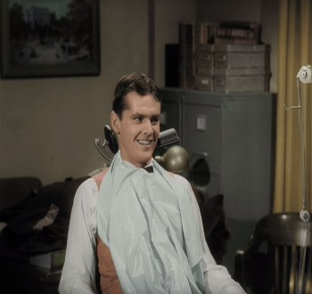
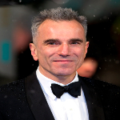
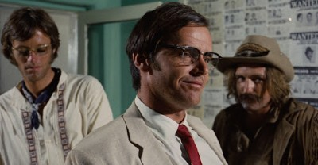
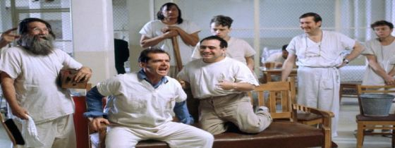
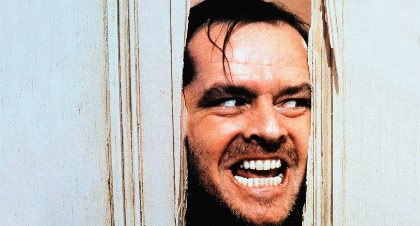
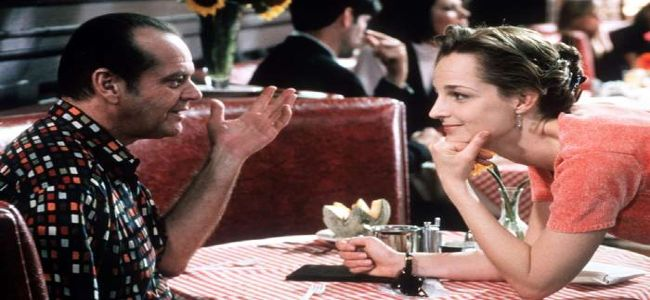

 John Joseph 'Jack' Nicholson (d. 22 Nisan 1937, New York) Amerikalı sinema oyuncusudur. Genellikle karanlık temalı filmlerde canlandırdığı nevrotik karakterlerle tanınmaktadır. Sinemanın en etkili ve en iyi oyuncularından biridir. Aday gösterildiği 12 Oskar ödülünün 3'ünü kazanmıştır. Bu dalda 3 ödül kazanan iki isimden biridir. Diğeri ise Daniel Day-Lewis 'dir Ayrıca 16 kez aday gösterildiği Altın Küre ödülünün 7'sini kazanmıştır. İki kez en iyi oyuncu seçilmiştir. 1994 yılında Amerika Film Enstitüsünde Ömür boyu başarı ödülü nü alarak, bu ödülü alan en genç oyuncu unvanını kazanmıştır.
 1967’de kendi yazdığı The Trip filminde yolunun kesiştiği Dennis Hopper’ın 1969 yapımı Easy Rider filminde oynaması hayatının önemli noktalarından birisidir ki bu filmde hayat verdiği sarhoş avukat karakteri ile ilk kez en iyi yardımcı erkek oyuncu oscar’ına aday gösterildi.Bundan bir yıl sonra Bob Rafelson’ın Five Easy Pieces isimli filminde 'Eroica Dupea' karakterini canlandırdı.Bu rolle bu kez en iyi erkek oyuncu oscar ödülüne aday gösterilmiştir.
Milos Forman’ın 1974 yapımı One Flew Over The Cuckoo’s Nest filmi ise Nicholson'ın zirve performanslarından birisidir.Akıl hastanesindeki 'Randle Patrick Mcmurphy' adında bir deliyi izleyenleri neredeyse gerçek bir deli olduğuna inandıracak şekilde oynamıştır.Hatta rolüne hazırlanırken,çekimlerin yapılacağı hastaneye bir ay önceden takma isimle yattığı bile rivayet edilir.Bu performansıyla o yıl en iyi erkek oyuncu Oscar’ını kazanmıştır.“Bu ödül her yerde olduğu gibi,akademi’de de pek çok delinin bulunduğunun ispatıdır” demiştir.
 1980 yılında Stanley kubrick’in Stephan king’in romanından uyarladığı The Shining filminde 'Jack Torrance' rolüyle hafızalara kazındı.O ve ailesi sırlarla dolu otelde kar yüzünden mahsur kaldığında, jack yavaş yavaş delirirken her mimiğiyle izleyicileri kabuslara boğdu.Otelin labirent gibi koridorlarındaki kovalamacalar sinema tarihinin en heyecanlı sahneleri arasındadır. Takvimler 1997'yi gösterdiğinde Mark Andrus ile birlikte yazar James L. Brooks yönetiği As Good as It Gets filminde,misantropik ve obsesif-kompulsif bir yazarı canlandırır.Oğlu kronik hasta olan bir gorsona hayat veren Helen hunt ve eşcinsel bir ressamı canlandıran Greg Kinnear ile kamera karşına geçer.Film 50 milyon dolarlık bir bütçeyle 314.1 milyon dolar hasılat elde eder.  Nicholson ve Hunt'ta en İyi Oyuncu dalında Akademi Ödülü'nü kazandırır. Ayrıca film hem başrol oyunculuk ödüllerini hem de en iyi film ödülünü kazanan 2 filmden biridir ('The Silence of the Lambs' aynı başarıyı göstermiş bir diğer filmdir).Film Empire dergisinin 'Tüm Zamanların En İyi 500 Filmi' listesinde 140. sırada yer almaktadır.